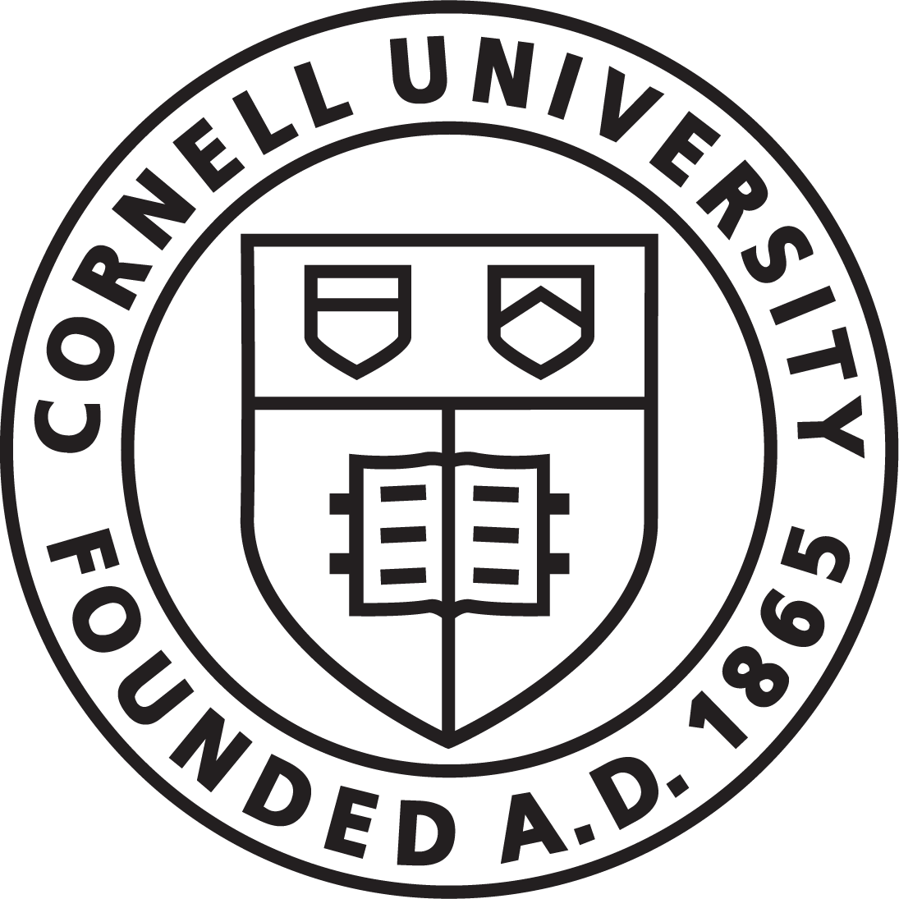

Никита Долгополов

Никита Долгополов
Инженер-конструктор
Я закончил Корнельский Университет (Cornell University) с отличием по программе бакалавра инженер-механик, при этом приобретя опыт и закрепив навыки в электронике и управленческой деятельности.
Я участвовал в нескольких исследовательских проектах, связанных с инновационными технологиями, и прослужил Главным Инженером-Конструктором и Президентом инженерной команды Cornell Hyperloop.
Я отстажировался в компании Tesla Inc., закрепив профессиональные навыки и технический английский и теперь возвращаюсь в Россию для работы в проектах связанных с автономией, автоматизацией, и производственными технологиями.